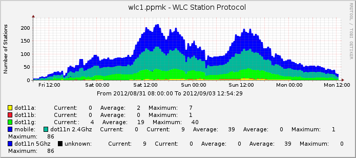
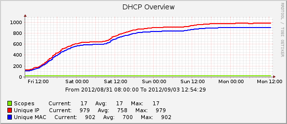

Electromagnetic Field
Tales from the UK's first large-scale hacker camp.
Russ Garrett — @russss
The Site
Networking
 
So, it turns out this talk is actually a bit of a sales pitch
EMF: Late Summer 2014
https://www.emfcamp.org
@emfcamp
@russss
Photo credits:
http://www.flickr.com/photos/russss
http://www.flickr.com/photos/chaoticeunoia
http://www.flickr.com/photos/nottinghack